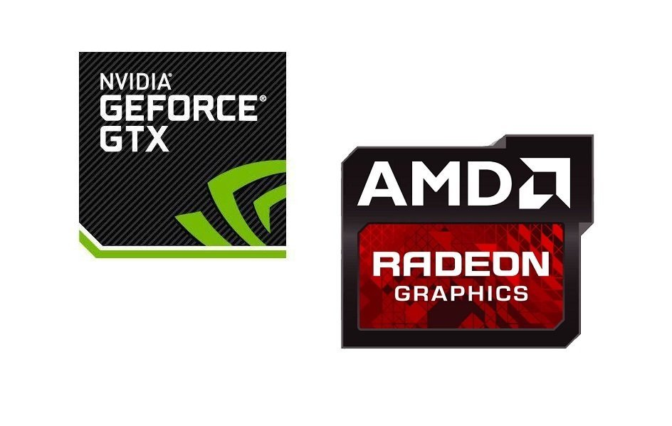

Видеокарта
Выбор видеокарты примерно схож с выбором процессора. На рынке присутствуют две компании производящие полноценные видеокарты. Нам необходимо опредилится для чего вы собираете компьютер, после уже выбирать подходящую вам модель.
На данный момент наиболее дешевыми картами считаются карты от AMD>
Но тут вам уже лучше сначала опредилится с ценой. Если вы хотите недорого и более менее производительный ПК в плане игр и других задач, то стоит обратить внимание на I3 от Intel и линейку Ryzen 3 от AMD. Далее следуя логике в более высоком ценовом сегменте у нас будут стоять I5 от Intel и Ryzen 5 от AMD. Ну а если вы профессионал, мое мнение не особо лояльно в этом вопросе потому как - это более узкая деятельность и что-то конкретно говорить тут нельзя.Подробнее о процессорах вы можете узнать из вкладки Видео, где некоторые из техноблогеров более в понятной форме вам расскажут о выборе процессоров, моя задача направить вас на нужную и наиболее полезную информацию по сборке ПК.